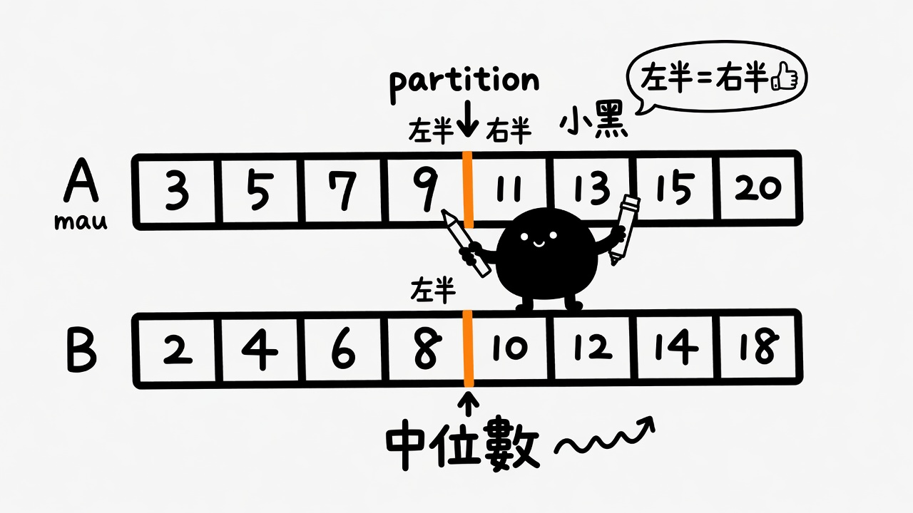
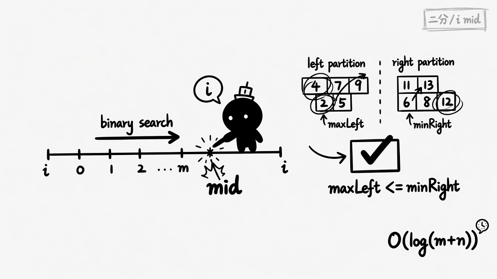
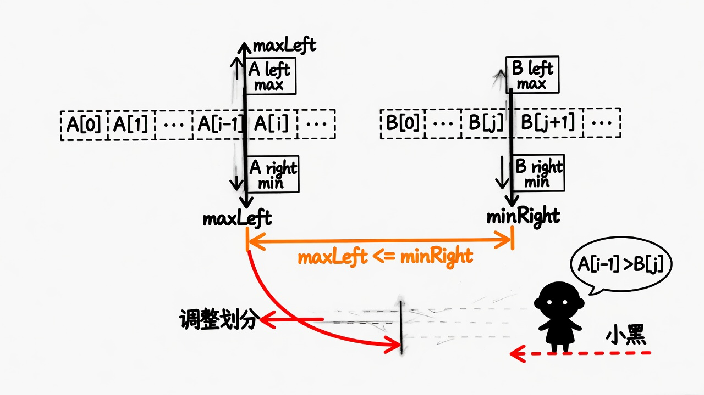

术语：median · partition · binary search · sentinel (−∞ / +∞)
本题核心只有两样：定位不变量 + 边界用哨兵统一。 先把不变量说清楚，再谈 binary search；公式只记一组。 测验统一提交；全对剪贴板含 #题号 · slug · 用时。
不要先想「怎么 merge」。已排序的两数组，中位数只要求： 把全体切成左半 L 与右半 R，使 L 里所有数 ≤ R 里所有数， 且 |L| 正确。切点找到了，median 就在切缝两侧。
二分不是炫技：题面要求 log 级。Merge 正确但 O(m+n)。 划分法用的是中位数的统计定义（均匀切半），把问题变成「找合法切分点」。
归并推进到中位下标。好写、好测，不满足 log 要求。
在较短数组上二分左半个数 i；
数量不变量钉死 j = half − i；
用顺序不变量判合法 / 调方向。
在优化什么：不合并，只定位切缝。
找第 k=(m+n+1)/2 与（偶数时）下一个。与划分同族，写法更「淘汰一半」。
| 解法 | 换到了什么 | 丢掉了什么 |
|---|---|---|
| Merge | 直观正确 | log 复杂度 |
| Partition 二分 | log、贴定义 | 不变量 + 边界要记准 |
| 第 k 小 | 可推广任意 k | 实现略绕 |
数量不变量——你只有一个自由度
左半总共要 half 个。在 A 上取 i 个，B 上就必须取
j = half − i 个。j 不是搜出来的，是算出来的。
所以 binary search 的搜索空间只有 i ∈ [0, m]（并保证 m ≤ n，使 j 合法）。
顺序不变量——max(L) ≤ min(R)
合并后要整体有序，切缝两侧必须「左不大于右」。 因为 A、B 各自已排序，A 内部、B 内部天然满足； 唯一可能破的是跨数组：
交叉两条 ⇔ 一个 maxLeft ≤ minRight。记交叉更利于写 if 分支。
合法条件是「且」：任一交叉失败就说明 i 偏了，且方向确定：
| 看到什么 | 含义 | 动作 |
|---|---|---|
A[i−1] > B[j] |
A 左半太大 → i 太大 |
缩小 i（right = i−1） |
B[j−1] > A[i] |
A 左半太小 → i 太小 |
增大 i（left = i+1） |
| 两条都 ≤ | 合法 partition | 停，算 median |
j 始终落在 [0, n]。
Hard 点常卡在「A 左半为空 / 取光 / B 同理」。 正确姿势：缺的一侧当成 −∞ 或 +∞，交叉公式一字不改。
if m > n { swap }，避免 j 越界。例 1 · 奇数 A=[1,3] B=[2] m=2 n=1 → 可先保证短的在前
half = (2+1+1)//2 = 2
试 i=1 → j=1
Aleft=1, Aright=3, Bleft=2, Bright=+∞
1≤+∞ 且 2≤3 → 合法
maxLeft=max(1,2)=2 → median=2.0
例 2 · 偶数 A=[1,2] B=[3,4]
half=2；短数组 A 上二分 i∈[0,2]
试 i=1 → j=1
Aleft=1, Aright=2, Bleft=3, Bright=4
1≤4 但 3≤2? 否 → Bleft > Aright → i 太小
试 i=2 → j=0
Aleft=2, Aright=+∞, Bleft=−∞, Bright=3
2≤3 且 −∞≤+∞ → 合法
(maxLeft,minRight)=(2,3) → median=2.5
例 3 · 边界 A=[] B=[1] → 单数组中位数 1.0
（实现时 m=0，i 只能 0，j=half）
三帧对应：切半图景 → 只搜 i → 交叉 / 调切分。


i
i围绕不变量 + 边界。全对复制：#题号 · slug · 用时 · 下一步。
Q1. 本题最优路径的「定位目标」是？
Q2. 在 A 上取左半 i 个后，B 的左半个数 j 由什么决定？
Q3. 顺序不变量「交叉两条」是？（多选）
Q4. 若 A[i−1] > B[j]，应如何调？
Q5. i=0（A 左半空）时，Aleft 应视为？
Q6. nums1=[1,2], nums2=[3,4] 的 median 是？
Q7. 总长为奇数时，median 取？